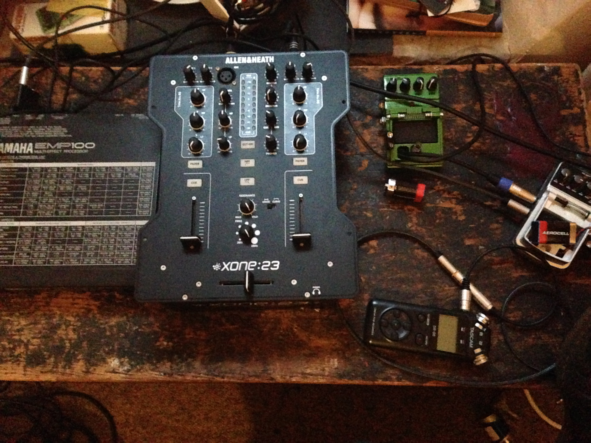

Sound Design - working with audio feedback
by Henry James
Sound design workshop focusing on experimental sound generation stratergies using audio feedback
Requirements
Any audio equipment including:
- Guitar pedals
- Mono jack wires/cables
- Jack splitters
- Effects units
- Laptops running any DAW (Ableton, Pro Tools etc)
- Mixer or audio interface (with laptop) to control output level